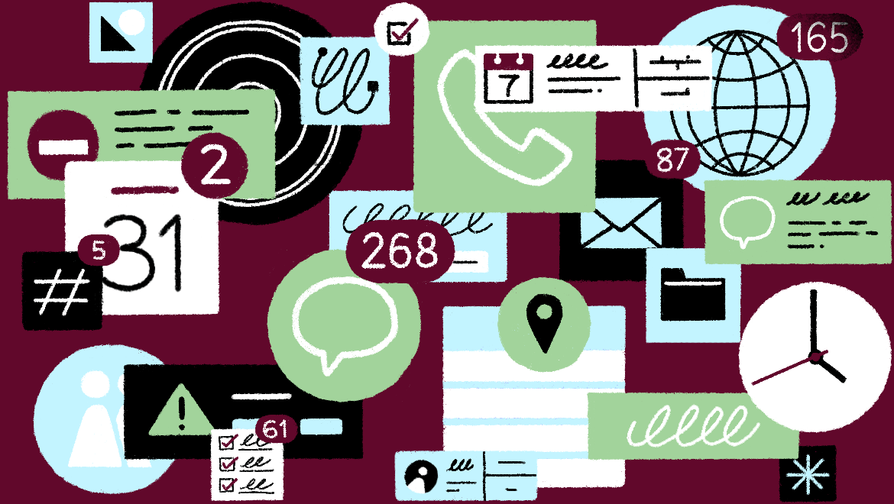

Perché proprio adesso?
Basti pensare a quanto è cambiato il lavoro nell'ultimo decennio.
Siamo passati da pochi strumenti software a dozzine di applicazioni, canali di comunicazione e sistemi di gestione dei progetti popolari, ciascuno multi-dispositivo e sempre attivo. Disponiamo di più tecnologie, un'intelligenza più vasta, un numero maggiore di persone con cui lavorare in molti modi diversi. Tutto questo, tuttavia, ha un costo: l'onere mentale di dover gestire tutto quanto.
La maggior parte di noi passa da un'applicazione di lavoro all'altra ogni sei minuti, con notifiche costanti che interrompono la nostra attenzione. Con contenuti, strumenti e team frammentati, non c'è da meravigliarsi se ci sentiamo frustrati e i team non riescono a sincronizzarsi. Man mano che svolgere attività importanti sul lavoro diventa sempre più difficile, dedichiamo sempre più ore non lavorative a cercare di tenere il passo. Tuttavia, anche se ci stiamo avvicinando a una giornata lavorativa di 24 ore, la produttività globale sta raggiungendo un punto di stagnazione.
È ora di iniziare a lavorare in modo più intelligente.
Un modo nuovo di
lavorare
Che cos'è un'area di lavoro intelligente? Quale aspetto avrebbe?
Un'area di lavoro intelligente è un ambiente digitale unisce tutti i contenuti dei team ai loro strumenti preferiti, consentendo agli utenti di eliminare il disordine e dedicarsi al lavoro importante.
Innanzitutto, in un'area di lavoro intelligente tutti i contenuti e gli strumenti utilizzati sono interconnessi, rendendoli facilmente accessibili. Niente più passaggi tra piattaforme, applicazioni e tipi di contenuti: un'area di lavoro intelligente ti consente di utilizzarli in un unico posto.
In secondo luogo, un'area di lavoro intelligente affianca persone e conversazioni associate a un file o progetto, riunendo il tuo lavoro in un luogo unico e non disperdendolo tra canali di comunicazione frammentati.
In terzo luogo, quest'area di lavoro utilizza l'intelligenza artificiale per mettere ordine e far emergere ciò che conta di più, suggerendo i contenuti necessari per una riunione o quelli che potrebbero essere rilevanti per il documento a cui stai lavorando, fino a riconoscere persino le immagini, in modo da non dover ricordare i nomi dei file.